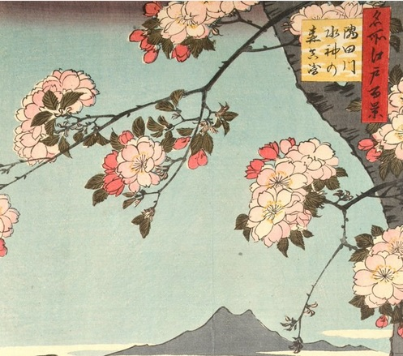
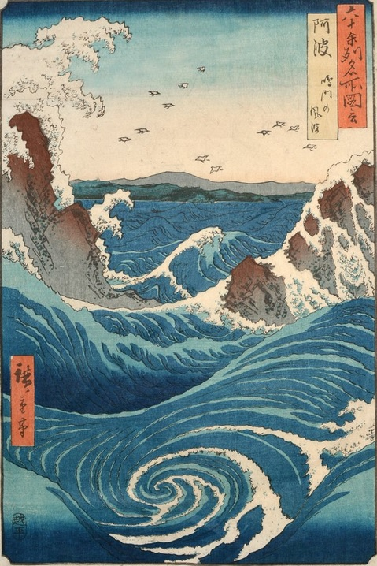
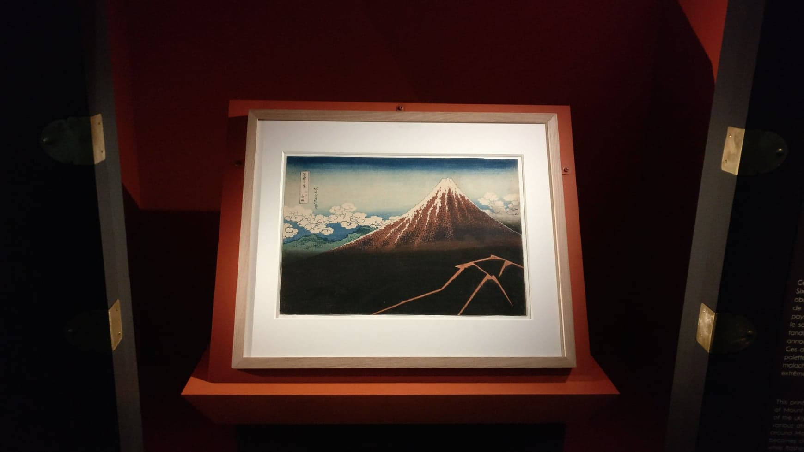
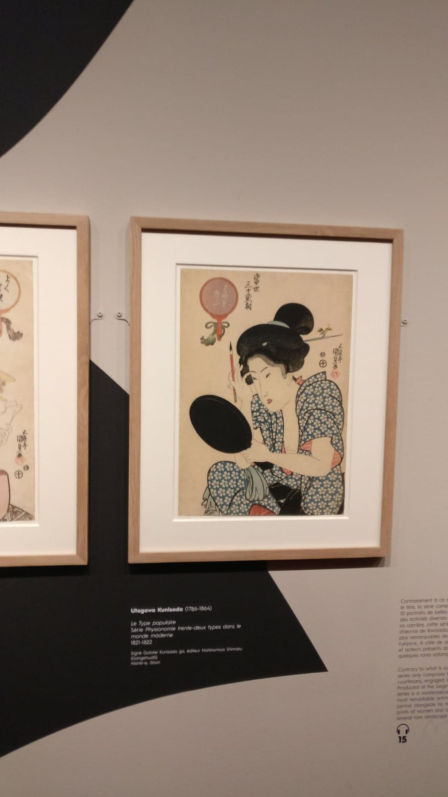
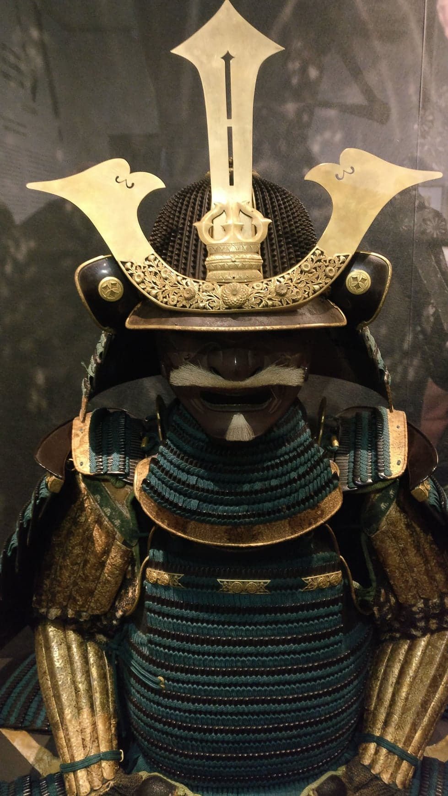

Hiroshige, prints and Aix-en-provence
In need of inspiration? Do not panic, I suggest a little trip to the edo air to meet the great masters of Japanese printmaking.

Hiroshige was born in 1797 at Edo (Tokyo) and died in 1858. He was a master of ukiyo-e style. He influenced many painters like Van Gogh or Monet.
Ukiyo-e is a japanese art based on woodblock prints and paintings with subjects like landscape, flora and fauna. This style can be considered as peotry, through it, japanese artist could express their feelings towards beauty of the nature. Montain and water hold an important place in the composition (sansui-ga), and leaves a predominant place to natural forces. Houses and characters are reprensented very small, often on the fringes, in front of surge of the elements such as tempest or storm.
To me ukiyo-e style is an important source of inspiration and it seems that its goals and purposes coincides with watercolorists ambition.

From 8 November 2019 to 22 Mars 2020, "Hôtel de Caumont" at Aix-en-provence in France exhibits works of masters of Japanese prints (Hokusai / Hiroshige / Utamaro). Mots of this prints are from the personnal collection of Georges Leskowicz. More than 150 works are presented and more particularly some surimono (Surimono are luxurious Japanese prints, playing the role of greeting cards, nad printed for private use).
having gone there, I can tell you that the exhibition is fabulous and it is an incredible opportunity for the city of Aix-en-provence.
Below, photos I took during the exhibition.


